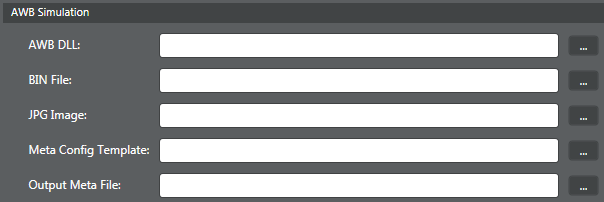
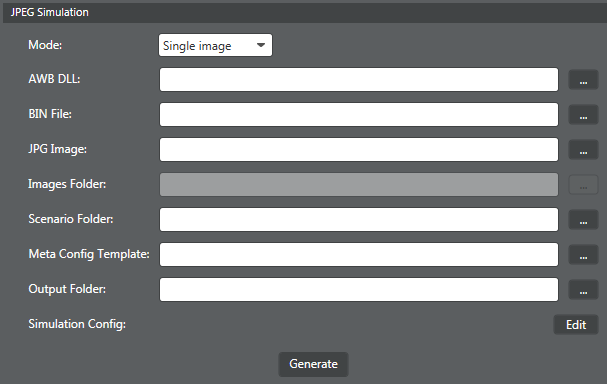
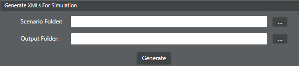

Use this procedure to run an AWB or JPEG simulation, or generate simulation XML files using the Command Line Assistant.
AWB simulation
- Perform AWB tuning and generate a new binary file for the target.
-
Go to and select AWB simulation
from the Use Case menu.

-
Next to AWB DLL,
click
 and select the AWB simulation .dll provided
in the software build.
and select the AWB simulation .dll provided
in the software build.
-
Next to BIN
File, click and select the tuned project .bin file. NOTE: For subsequent simulations, it is
important to update the .bin file after making any tuning parameter
updates.
-
Next to JPEG
Image, click and select the
JPEG file to use as input for the simulation.
-
Next to Meta Config
Template, click and navigate to
<project>\Simulation\Default\meta_config.xml.
Before selecting, verify the file values are set the way you want them;
edit if needed.
-
Next to Output Meta File, click
and select the meta file.
-
Next to AWB DLL,
click
JPEG simulation
- Perform AWB tuning and generate a new binary file for the target. Using this target device, capture a JPEG image with 3A debug data and metadata.
-
Go to and select JPEG simulation
from the Use Case menu.

-
From the Mode
menu, select whether the simulation is for a single image or multiple
images.
- For a single image, click next to
JPG Image and select
the JPEG image captured from Step 3.
- For multiple images, click next to
Images Folder and
select the folder containing all JPEG images captured from Step
8.
- For a single image, click
-
Next to AWB DLL,
click and select the AWB simulation .dll
provided in the software build.
-
Next to BIN
File, click and select the tuned project .bin file. and
select the AWB simulation .dll provided in the software build.NOTE: For subsequent simulations, it is
important to update the .bin file after making any tuning parameter
updates.
-
Next to Meta Config
Template, click and navigate to
<project>\Simulation\Default\meta_config.xml.
Before selecting, verify the file values are set the way you want them;
edit if needed.
-
Next to Output
Folder, click and select the
folder where the simulation output should be saved.
-
From the Mode
menu, select whether the simulation is for a single image or multiple
images.
Generate XMLs for simulation
-
Go to and select and select the AWB simulation .dll provided in theGenerate XMLs for
simulation from the Use
Case menu.

-
Next to Scenario
Folder, click and select the
scenario from which to generate XMLs.
-
Next to Output
Folder, click and select the
folder where the simulation output should be saved.
-
Next to Scenario
Folder, click